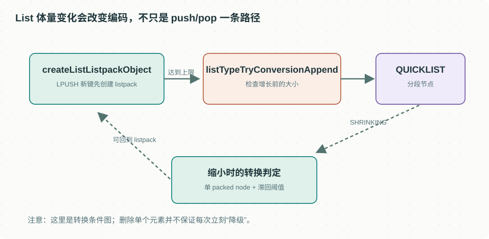
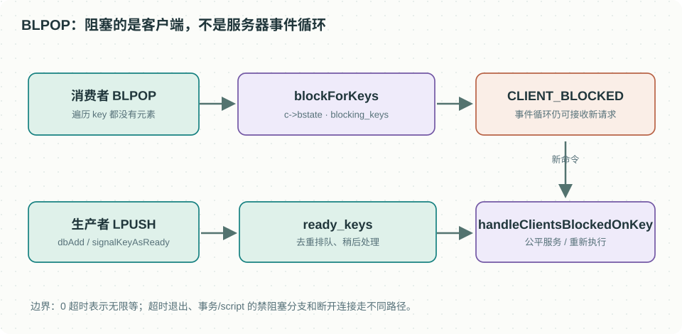
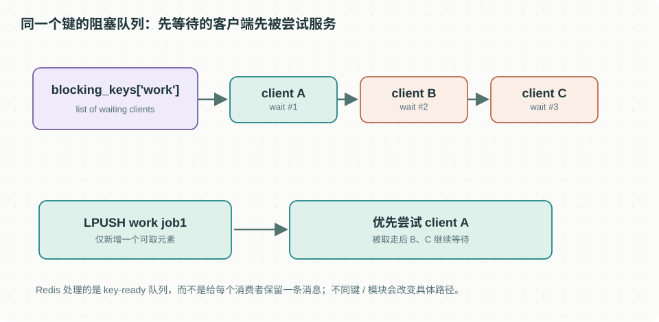

Chapter 10 · Redis 7.2.4 Source Anatomy
List 阻塞操作：事件循环如何等待而不停止
理解 LPUSH 的 listpack/quicklist 转换，以及 BLPOP 从 blockForKeys 到 ready_keys 唤醒与超时的真实状态机。
空列表上的 BLPOP，究竟是谁在等待？
Redis 允许客户端 A 执行 BLPOP jobs 0，即在 jobs 没有可读元素时无限等待另一个客户端写入。但如果把这里的“阻塞”理解成服务器主线程一直睡在 while(queue.empty()) 循环里，就会产生悖论：如果主线程真的不再处理其他连接，生产者 B 的 RPUSH jobs task 也永远无法执行，客户端 A 又怎可能被唤醒？
真实答案是：被挂起的是 A 的客户端命令状态，不是 Redis 整个事件循环。服务器仍继续处理可读连接、其他键操作和调度任务。消费者条件满足时，Redis 将已就绪的键加入待处理集合，稍后按阻塞队列顺序尝试服务等待者。这是一套协调状态机，不是每个消费者一条 OS 线程。
LPUSH/RPUSH：新 List 先是 listpack
Redis 7.2.4 的 pushGenericCommand(c, where, xx) 先执行数据库键查找和类型检查。若键不存在且不是 LPUSHX/RPUSHX，则调用 createListListpackObject() 创建新 List，而不是一开始创建 quicklist。追加前执行 listTypeTryConversionAppend() 检查当前大小；可能转成 quicklist，再逐个调用 listTypePush()。

这修正了旧文中“LPUSH 创建 quicklist 对象”的版本错误。List 的逻辑长度可在 listpack 头或 quicklist 计数字段维护，但 LRANGE 返回大量元素仍需按范围遍历并构造响应，其成本取决于输出元素数量和编码细节。
/* Redis 7.2.4 src/t_list.c 的语义路径 */
pushGenericCommand(client *c, int where, int xx):
lobj = lookupKeyWrite(...)
checkType(..., OBJ_LIST)
if no key: lobj = createListListpackObject()
listTypeTryConversionAppend(lobj, argv, ...)
for each value: listTypePush(lobj, value, where)
signalModifiedKey(...)临时实例里可以先 LPUSH jobs first，再用 OBJECT ENCODING jobs 查看 List 当前的编码；不能单凭某个 Redis 旧版本的 quicklist 描述断言 7.2.4 的结果。
空键时的客户端状态机
blockingPopGenericCommand() 会按调用参数顺序尝试查找指定 key，找到已有非空 List 就立即弹出并返回。只有所有目标 key 都没有可弹出元素，且当前上下文允许阻塞时，才调用 blockForKeys(..., BLOCKED_LIST, ...)。如果调用处带 CLIENT_DENY_BLOCKING 标志（例如特定脚本/事务场景），源码会走空回复而不是让执行过程永久等待。

在 blocked.c 中，blockForKeys() 为客户端设置 bstate.timeout、bstate.keys，并把等待者登记到数据库 blocking_keys 对应的客户端链表，随后调用 blockClient()。这是客户端侧与数据库侧的双向索引：既能按 key 找等待者，也能在客户端退出、超时或取消时清理原有登记。
| 状态 / 数据结构 | 作用 | 读源码时的关键问题 |
|---|---|---|
c->bstate.keys | 客户端在等哪些键 | 如何在多个 key 上登记/取消 |
db->blocking_keys | 某个 key 的等待客户端列表 | 队列追加和先后顺序如何保持 |
db->ready_keys | 同一数据库内去重 ready 键 | 避免重复将同一键加入服务队列 |
server.ready_keys | 待处理的 ready 事件链表 | 何时和怎样批量服务 |
CLIENT_PENDING_COMMAND | 恢复时可能需重新执行命令 | 为什么不是保存一个“待返回元素”就算完成 |
写入后如何唤醒：ready key 与重执行
当 List 写入导致键可读时，dbAdd() 等路径会调用 signalKeyAsReady()。它并不会在命令写入的每个时刻直接把值发送给等待者，而是先判断是否存在相关阻塞客户端，再向 ready_keys 安排待处理状态。随后 handleClientsBlockedOnKeys() 会消费这些 ready key，handleClientsBlockedOnKey() 再尝试服务挂在该键上的客户端。
重新执行命令前，Redis 必须清除客户端的阻塞标志与关联关系，并检查数据在真正服务时是否依然可用。源码的 unblockClient() 与 processUnblockedClients() 处理已解除阻塞客户端的后续处理；这也是不能把 BLPOP 源码简写成“push 直接拿到某个消费者指针然后写回”这么简单的原因。

同一个键的等待者遵循先注册先尝试服务的顺序。不过多键 BLPOP、多个 ready 键、模块与事务的相互影响可能改变完整的调度顺序，不应泛化为所有消费者之间的严格全局 FIFO。
超时 0 并不是“立即返回”
在 BLPOP key timeout 中，timeout=0 表示持续等待，直到取得元素或其他条件使客户端解除阻塞；非零超时以秒为单位，Redis 7.2 支持小数秒。getTimeoutFromObjectOrReply() 解析超时并转换成内部时间表达。超时任务由服务器相关调度路径处理，而非给这个客户端创建一个等待线程。
如果客户端连接在等待期间断开，阻塞登记也必须被清除。若命令在事务或其他禁止阻塞的上下文执行，不能套用普通 BLPOP 的无限等待语义；需要看 CLIENT_DENY_BLOCKING 分支和相应命令文档。
# 单独的终端：超时实验，队列不写入
./src/redis-cli -p 6390 DEL demo:wait
./src/redis-cli -p 6390 BLPOP demo:wait 1
# 预期约 1 秒后收到 Null，而不是把主线程阻塞 1 秒。
# 0 秒则代表无限等待：请在第二终端写入元素解除阻塞。“约 1 秒”只是实际客户端观察的数量级，操作系统调度、网络延迟和服务器负载会影响时钟测量，不应将其写成硬实时保证。
三终端实验：在不停机的情况下让等待者恢复
用 127.0.0.1:6390 的隔离 Redis 7.2.4 实例，依次启动消费者、生产者并查看输出。实验不是线上队列部署建议：禁用了快照/AOF，并且 BLPOP 自身没有确认机制。
# 终端 A：启动隔离实例
./src/redis-server --bind 127.0.0.1 --port 6390 --save "" --appendonly no
# 终端 B：清理并开始等待，这一行会暂停当前客户端
./src/redis-cli -p 6390 DEL tutorial:queue
./src/redis-cli -p 6390 BLPOP tutorial:queue 0
# 终端 C：Redis 仍能正常处理请求
./src/redis-cli -p 6390 PING
./src/redis-cli -p 6390 RPUSH tutorial:queue task-001
# 终端 B 现在应返回键 tutorial:queue 和值 task-001
# 终端 C 清理
./src/redis-cli -p 6390 SHUTDOWN NOSAVE验证点：即使 B 看起来“卡住”，C 的 PING 仍能收到 PONG；C 写入一个元素后，B 返回两项内容（键和值）。如果 B 启动前已有元素，那么 BLPOP 会立即弹出，不会经历阻塞状态。还可以用第二个消费者对同一 key 执行 BLPOP，观察只有一个元素时另一个仍等待。
List 阻塞弹出不是可靠消息投递协议
BLPOP 在返回元素时已经把它从 List 移除。如果消费者拿到任务后崩溃，Redis 不会像带确认的任务系统一样自动把刚弹出的任务放回 List。因此它适合简单工作分发，但不天然提供“恰好一次”消费、重试队列、消费确认、持久消费组或消息历史。
需要更可恢复的消费流程时，可以设计使用 BLMOVE 将任务转到处理中 List，再由业务逻辑显式确认和超时回收；或者选用 Stream + consumer group，并处理 PEL、重试与幂等。两种模式都需要上层处理故障、去重和任务语义，不能只改一个命令名就宣称业务消息永不丢失。
固定版本参考
阅读本章时按 Redis 7.2.4 核对全部函数；官方最新文档含后续版本特性，不应直接视为 7.2.4 已实现。